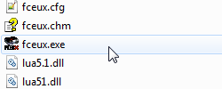

Содержание
Эмулятор Nintendo Entertainment System и Family Computer Disk с открытым исходным кодом, написанный на языке C++.
Скачай свежую сборку эмулятора FCEUX. Время от времени она обновляется.
Выбери инетерсующую тебя версию (я пользуюсь Windows 32), а затем перейди во вкладку Artifacts для скачивания архива.

Эта сборка содержит в себе множество полезных изменений и багфиксов, в отличие от последней (на данный момент это 2.5.0) версии на официальном сайте.
Все статьи были написаны во время использования мною одной из промежуточных версий между 2.2.3 и 2.3.0. Из-за этого некоторая информация на сайте может быть немного устаревшей.
Дату компиляции версии эмулятора можно посмотреть в Help -> About.

Если у тебя уже есть FCEUX, достань из архива файл fceux.exe и замени у себя в корневой папке эмулятора.

Также забери файл fceux.chm, если тебе нужна свежая версия офлайн справки. Она обновляется довольно редко.
После обновления твои настройки останутся без изменений. Они хранятся в файле fceux.cfg. Этот файл автоматически создается/обновляется после закрытия эмулятора.
Возможно потребуется перенастроить управление для 3-го и 4-го игрока при первом обновлении с версии 2.2.2 или 2.2.3.